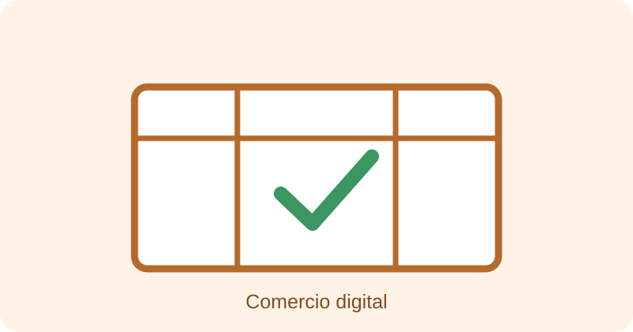

La tecnologia web en los negocios

Las tecnologias web ofrecen a los negocios nuevas formas de promocionar sus productos, comunicarse con sus clientes y organizar sus actividades. Una pagina web o una tienda en linea puede ayudar a que un emprendimiento llegue a personas de diferentes lugares.
Usos frecuentes
- Publicar informacion de productos y servicios.
- Recibir consultas y pedidos por medios digitales.
- Promocionar ofertas en redes sociales.
- Gestionar reservas y atencion al cliente.
Beneficios y cuidados
| Oportunidad | Aspecto que debe cuidar |
|---|---|
| Llegar a mas clientes | Ofrecer informacion clara y actualizada |
| Atender consultas rapidamente | Responder con respeto y responsabilidad |
| Recibir pedidos en linea | Proteger los datos de los compradores |
| Promocionar productos | Publicar contenido verdadero |